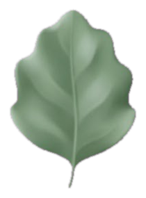
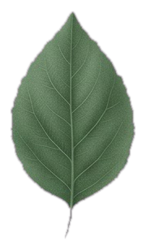
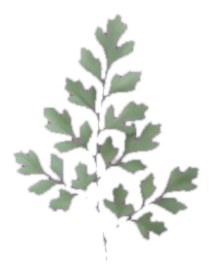
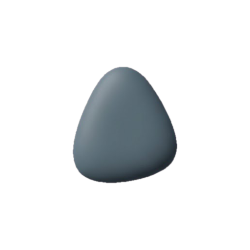

<!DOCTYPE html>
<html lang="he" dir="rtl" data-theme="nachal"><head><meta charset="utf-8">
<meta name="viewport" content="width=device-width,initial-scale=1">
<title>נחל · טלפון</title>
<link href="https://fonts.googleapis.com/css2?family=IBM+Plex+Sans+Hebrew:wght@400;500;600;700&family=IBM+Plex+Sans:wght@400;500;600;700&family=Varela+Round&display=swap" rel="stylesheet">
<!-- One phone of the unify mockup. It is not a copy of the app: at load it reads
     ../../index.html and takes from it, unchanged, the whole stylesheet, the nav
     markup, the nav code (the glass drop, the ripples, the water in the tasks
     icon, the badge pop, the haptic tap) and the icon set. What this file adds is
     the proposal: the delta stylesheet below and the screens' content, all under
     mk- class names so the app's own rules never reach them by accident.
     Query: ?s=home|sites|tasks|people  &open=<sheet>  &v=drawer|picker|map -->
<style id="mk-css">
:root{
  /* ink on light surfaces, and on the room */
  --mk-ink:#0B1A12;--mk-ink2:#2C3E35;--mk-sage:#24503E;--mk-on:#FFFFFF;--mk-on2:#DCEAE3;
  /* status: three glass beads, one saturation, three hues */
  --coral-1:hsl(6 64% 76%);--coral-2:hsl(6 52% 54%);
  --amber-1:hsl(38 64% 76%);--amber-2:hsl(38 52% 50%);
  --jade-1:hsl(162 52% 72%);--jade-2:hsl(162 52% 36%);
  --mk-card:rgba(230,243,235,var(--mk-card-a));--mk-card-a:.78}
@supports not ((backdrop-filter:blur(1px)) or (-webkit-backdrop-filter:blur(1px))){:root{--mk-card-a:.95}}
@media (prefers-reduced-transparency:reduce){:root{--mk-card-a:.98}}

/* ── delta 1: one room behind every screen ──
   Home leaves its olive gradient and takes the same fixed room as the four
   list screens, and all of them use one photograph. (In the app this is the
   existing ::before rule with #screen-home added and one --nh-forest.) */
[data-theme="nachal"] #screen-home{isolation:isolate;padding-bottom:120px}
[data-theme="nachal"] #screen-home::before{
  content:'';position:fixed;top:0;bottom:0;left:50%;transform:translateX(-50%);width:100%;max-width:430px;z-index:-1;pointer-events:none;
  background-image:
    linear-gradient(180deg,rgba(3,40,38,.54) 0%,rgba(3,36,34,.60) 55%,rgba(2,30,29,.68) 100%),
    radial-gradient(70% 26% at 86% 14%,rgba(72,214,190,.26),rgba(72,214,190,0) 72%),
    radial-gradient(60% 24% at 6% 58%,rgba(54,190,168,.18),rgba(54,190,168,0) 72%),
    linear-gradient(#0E8479,#0E8479),
    var(--nh-forest,none);
  background-blend-mode:normal,normal,normal,color,normal;
  background-size:auto,auto,auto,auto,cover;background-position:0 0,0 0,0 0,0 0,center top;background-repeat:no-repeat;background-color:#0A4640}
[data-theme="nachal"] #screen-home::after{
  content:'';position:fixed;left:50%;transform:translateX(-50%);bottom:0;z-index:50;pointer-events:none;width:100%;max-width:430px;height:112px;
  background:linear-gradient(to bottom,rgba(4,42,38,0) 0,rgba(4,42,38,.6) 30%,rgba(4,42,38,.72) 100%);
  -webkit-backdrop-filter:blur(12px);backdrop-filter:blur(12px);
  -webkit-mask-image:linear-gradient(to bottom,transparent 0,#000 30%);mask-image:linear-gradient(to bottom,transparent 0,#000 30%)}
[data-theme="nachal"] :is(#screen-home,#screen-sites,#screen-tasks,#screen-people,#screen-calendar){--nh-forest:url('../../assets/backgrounds/bg-fern-mist.webp');--nh-veil-extra:transparent}
/* ── delta 2: a red count only where something waits for you ── */
[data-theme="nachal"] #badge-sites,[data-theme="nachal"] #badge-people{display:none!important}

/* ── glass beads: open and stuck coral, waiting soft amber, done jade ──
   A small sphere of tinted glass: a bright spot top-left, a darker rim at the
   bottom, a white hairline ring, and now and then a glint of light, like the
   nav's drop. The word beside it is always the ink colour. */
.mk-bead{--b1:var(--coral-1);--b2:var(--coral-2);position:relative;display:inline-block;flex:none;width:12px;height:12px;border-radius:50%;
  background:radial-gradient(circle at 34% 28%,rgba(255,255,255,.95) 0 11%,rgba(255,255,255,.4) 24%,rgba(255,255,255,0) 42%),
             radial-gradient(circle at 50% 70%,var(--b1),var(--b2) 80%);
  box-shadow:inset 0 -1.5px 2px rgba(0,0,0,.18),0 0 0 1px rgba(255,255,255,.7),0 2px 6px -1px var(--b2)}
.mk-bead::after{content:'';position:absolute;top:1px;left:2px;width:5px;height:4px;border-radius:50%;background:#fff;opacity:0;
  animation:mk-glint 5.6s ease-in-out infinite;animation-delay:var(--d,0s)}
@keyframes mk-glint{0%,84%,100%{opacity:0;transform:scale(.5)}89%{opacity:1;transform:scale(1.2)}95%{opacity:.25;transform:scale(.9)}}
@media (prefers-reduced-motion:reduce){.mk-bead::after{animation:none}}
.mk-bead.amber{--b1:var(--amber-1);--b2:var(--amber-2)}
.mk-bead.jade{--b1:var(--jade-1);--b2:var(--jade-2)}
.mk-bead.lg{width:16px;height:16px}
.mk-st{display:inline-flex;align-items:center;gap:7px;font-size:14.5px;font-weight:600;color:var(--mk-ink);white-space:nowrap}
/* "stuck N days": one even coral capsule, no blob */
.mk-stuck{display:inline-flex;align-items:center;gap:5px;height:26px;padding:0 10px;border-radius:13px;white-space:nowrap;
  font-size:13.5px;font-weight:700;color:var(--mk-ink);background:linear-gradient(180deg,hsl(6 72% 89%),hsl(6 64% 82%));
  box-shadow:inset 0 1px 0 rgba(255,255,255,.9),0 0 0 1px hsla(6,52%,54%,.42)}
.mk-stuck svg{width:14px;height:14px}

/* ── shared pieces ── */
.mk svg.ic{width:1em;height:1em;fill:none;stroke:currentColor;stroke-width:1.8;stroke-linecap:round;stroke-linejoin:round;flex:none;vertical-align:-.14em}
.mk{padding:0 16px;color:var(--mk-on)}
.mk-card{background:var(--mk-card);-webkit-backdrop-filter:blur(18px) saturate(1.15);backdrop-filter:blur(18px) saturate(1.15);
  border:1px solid rgba(255,255,255,.34);border-radius:22px;color:var(--mk-ink);padding:16px}
.mk-card + .mk-card{margin-top:10px}
.mk-t{font-size:14.5px;font-weight:700;color:var(--mk-sage);display:flex;align-items:center;gap:6px;line-height:1.3;text-wrap:balance}
.mk-d{font-size:19px;font-weight:700;color:var(--mk-ink);line-height:1.32;text-wrap:balance}
.mk-p{font-size:14px;line-height:1.45;color:var(--mk-ink2);text-wrap:pretty}
.mk-clamp{display:-webkit-box;-webkit-line-clamp:2;-webkit-box-orient:vertical;overflow:hidden}
.mk-clamp.open{display:block}
.mk-one{white-space:nowrap;overflow:hidden;text-overflow:ellipsis}
.mk-more{font-size:13.5px;font-weight:600;color:var(--mk-sage);padding:4px 0 0;display:none;align-self:flex-start}
.mk-more.show{display:inline-block}
.mk-tick{width:34px;height:34px;border-radius:11px;flex:none;border:2px solid var(--mk-sage);background:rgba(255,255,255,.45);display:flex;align-items:center;justify-content:center;color:transparent}
.mk-tick.sm{width:26px;height:26px;border-radius:8px;border-width:1.8px}
.mk-tick.coral{border-color:var(--coral-2)}
.mk button:focus-visible,.mk-sheet button:focus-visible{outline:3px solid #9FE6D3;outline-offset:2px}

/* ── Home: hello, then the bento straight after ── */
.mk-hello{padding:40px 2px 0}
.mk-hello-row{display:flex;align-items:center;justify-content:space-between;gap:10px}
.mk-date{font-size:14px;color:var(--mk-on2);display:flex;align-items:center;gap:6px}
.mk-greet{font-size:28px;font-weight:700;color:var(--mk-on);margin:4px 0 6px;display:flex;align-items:center;gap:8px;line-height:1.2}
.mk-greet svg{font-size:22px}
.mk-stat{display:flex;flex-wrap:wrap;gap:4px 10px;font-size:15px;color:var(--mk-on)}
.mk-stat button{color:var(--mk-on);font-size:15px} .mk-stat b{color:var(--mk-on);font-weight:700}
.mk-srv{margin-top:8px;font-size:13.5px;color:var(--mk-on2);display:flex;gap:6px;align-items:center}
.mk-srv u{text-decoration:underline;text-underline-offset:3px;color:var(--mk-on)}
.mk-rbtn{height:44px;width:44px;border-radius:22px;display:inline-flex;align-items:center;justify-content:center;position:relative;
  background:rgba(236,246,240,.16);border:1px solid rgba(255,255,255,.26);color:var(--mk-on);font-size:19px;
  -webkit-backdrop-filter:blur(10px);backdrop-filter:blur(10px)}
.mk-rbtn b{position:absolute;top:4px;left:5px;width:16px;height:16px;border-radius:50%;background:#DCEBE3;color:#0B1A12;font-size:13px;line-height:16px;font-weight:700;text-align:center}
.mk-rbtn i{position:absolute;top:6px;right:7px;width:9px;height:9px;border-radius:50%;background:var(--mk-on2);box-shadow:0 0 0 2px #2C5A4F}

.mk-bento{display:grid;grid-template-columns:repeat(2,minmax(0,1fr));gap:10px;margin-top:16px}
/* each tile its own quiet hue from teal, moss and sand; slightly different
   corners; a thin edge of light along the top; a soft shadow under it */
.mk-tile{position:relative;overflow:hidden;min-width:0;min-height:132px;display:flex;flex-direction:column;align-items:stretch;gap:4px;text-align:right;
  padding:14px 14px 13px;color:var(--mk-ink);background:linear-gradient(162deg,var(--h1),var(--h2));border-radius:var(--r,22px);
  border:1px solid rgba(255,255,255,.55);box-shadow:inset 0 1px 0 rgba(255,255,255,.9),inset 0 -10px 18px -14px rgba(0,40,32,.22),0 14px 26px -18px rgba(0,26,22,.75)}
.mk-tile.span2{grid-column:span 2}
.mk-tile.tall{grid-row:span 2}
.mk-tile .mk-t{position:relative;z-index:1}
.mk-num{position:relative;z-index:1;margin-top:auto;display:flex;align-items:baseline;flex-wrap:nowrap;gap:2px 6px;color:var(--mk-ink);
  font-family:'Varela Round','IBM Plex Sans Hebrew',system-ui,sans-serif;font-size:34px;line-height:1.05;font-variant-numeric:tabular-nums}
.mk-num em{font-style:normal;font-size:19px}
.mk-num small{font-family:'IBM Plex Sans Hebrew',system-ui,sans-serif;font-size:13.5px;color:var(--mk-ink2);font-weight:500}
.mk-line{position:relative;z-index:1;font-size:13.5px;color:var(--mk-ink2);white-space:nowrap;overflow:hidden;text-overflow:ellipsis}
.mk-art{position:absolute;top:12px;left:12px;pointer-events:none}
/* an illustration that sits at the far end of the number row */
.mk-art-in{margin-right:auto;align-self:center;flex:none}
.mk-num:has(.mk-art-in){align-items:center}
.mk-pebbles i{flex:none}
.h-sea{--h1:#E2F3EC;--h2:#C8E6DC;--r:28px 28px 22px 28px}
.h-moss{--h1:#E5F0DD;--h2:#CDE1C2;--r:26px}
.h-aqua{--h1:#DDF1EF;--h2:#C3E4E0;--r:22px 24px 22px 18px}
.h-sage{--h1:#E3EEDB;--h2:#CCDFBF;--r:20px 22px 26px 22px}
.h-river{--h1:#D7F0EA;--h2:#BEE2D8;--r:24px 20px 24px 24px}
.h-fern{--h1:#E1EFE5;--h2:#C9E0D0;--r:26px 22px 20px 26px}
.h-sand{--h1:#F4EEDF;--h2:#E8DEC6;--r:22px 26px 22px 22px}
.h-stone{--h1:#EFEADD;--h2:#E0D7C3;--r:20px 24px 24px 20px}
.h-mist{--h1:#DCEFEA;--h2:#C6E3DB;--r:24px}
.mk-focus{display:flex;gap:12px;align-items:flex-start}
.mk-focus > div{flex:1;min-width:0;display:flex;flex-direction:column;gap:5px}
.mk-next{display:flex;flex-direction:column;gap:2px;margin-top:8px;position:relative;z-index:1}
.mk-next-row{display:flex;gap:8px;align-items:flex-start;padding:7px 0;border-top:1px solid rgba(11,26,18,.08)}
.mk-next-row > .mk-nt{flex:1;min-width:0;font-size:14.5px;font-weight:600;line-height:1.35;color:var(--mk-ink)}
.mk-next-row small{display:block;font-weight:400;font-size:12.5px;color:var(--mk-ink2)}
.mk-beads{display:flex;gap:10px;align-items:center;position:relative;z-index:1;font-family:'Varela Round',sans-serif;font-size:15px;color:var(--mk-ink)}
.mk-beads span{display:inline-flex;align-items:center;gap:5px}
.mk-pebbles{display:flex;gap:3px}
/* pebble.png has wide transparent margins; each pebble is shown through a window that fits it */
.mk-pebbles i{position:relative;display:block;width:24px;height:27px;overflow:hidden;filter:drop-shadow(0 2px 2px rgba(0,30,20,.28))}
.mk-pebbles img{position:absolute;width:56px;height:56px;left:-16px;top:-15px}
.mk-pebbles i.pb-off{filter:none;opacity:.34}
.mk-pebbles i.pb-off img{filter:grayscale(1) brightness(.95)}
.mk-art.mk-leaves{width:62px;height:46px;position:absolute}
.mk-leaves img{position:absolute;height:36px;filter:drop-shadow(0 2px 2px rgba(0,30,20,.2))}
.mk-slim{flex-direction:row;align-items:center;min-height:0;gap:10px;padding:12px 14px}
.mk-slim .mk-num{margin:0;font-size:24px}
.mk-chip{width:30px;height:30px;border-radius:50%;background:rgba(36,80,62,.12);display:flex;align-items:center;justify-content:center;font-size:16px;color:var(--mk-sage);flex:none}

/* ── list screens ── */
.mk-hdr{margin:0 -16px 14px;padding:22px 16px 16px;border-radius:0 0 28px 28px;background:rgba(6,50,46,.62);
  -webkit-backdrop-filter:blur(16px);backdrop-filter:blur(16px);border-bottom:1px solid rgba(255,255,255,.08)}
.mk-hdr-top{display:flex;align-items:center;justify-content:space-between;gap:8px}
.mk-hdr-top h3{font-size:24px;font-weight:700;color:var(--mk-on)}
.mk-hbtns{display:flex;gap:8px}
.mk-hb{width:42px;height:42px;border-radius:50%;background:rgba(236,246,240,.14);border:1px solid rgba(255,255,255,.22);display:flex;align-items:center;justify-content:center;font-size:18px;color:var(--mk-on)}
.mk-hb.add{background:linear-gradient(135deg,#4A7760,#3A6149)}
.mk-hb.on{background:#DCEBE3;color:var(--mk-ink)}
.mk-pill{height:40px;padding:0 16px;border-radius:12px;background:#0B5E54;color:#fff;font-weight:700;font-size:15px;display:flex;align-items:center}
.mk-search{margin-top:12px;display:flex;gap:8px}
.mk-search span{flex:1;height:46px;border-radius:23px;border:1px solid rgba(255,255,255,.24);background:rgba(236,246,240,.10);display:flex;align-items:center;gap:8px;padding:0 16px;color:#C7DCD2;font-size:15px}
.mk-search b{height:46px;border-radius:23px;border:1px solid rgba(255,255,255,.24);padding:0 16px;display:flex;align-items:center;gap:6px;font-weight:600;color:var(--mk-on);font-size:15px}
.mk-chips{margin-top:10px;display:flex;gap:6px;overflow:hidden}
.mk-chips span{flex:none;height:36px;padding:0 12px;border-radius:18px;border:1px solid rgba(255,255,255,.24);display:flex;align-items:center;font-size:14.5px;font-weight:600;color:var(--mk-on)}
.mk-chips span.on{background:#DCEBE3;color:var(--mk-ink);border-color:transparent}
.mk-site{display:flex;flex-direction:column;gap:8px}
.mk-site-top{display:flex;gap:10px;align-items:flex-start}
.mk-site-top > div{flex:1;min-width:0}
.mk-sname{font-size:17px;font-weight:700;line-height:1.3}
.mk-sline{font-size:14.5px;color:var(--mk-ink2);margin-top:2px}
.mk-navb{width:42px;height:42px;border-radius:50%;background:rgba(255,255,255,.5);display:flex;align-items:center;justify-content:center;font-size:17px;color:var(--mk-sage);flex:none}
.mk-tags{display:flex;align-items:center;gap:12px;flex-wrap:wrap}
.mk-chev{margin-right:auto;color:var(--mk-ink2);font-size:17px}
.mk-drawer{margin-top:4px;padding-top:12px;border-top:1px solid rgba(11,26,18,.12);display:flex;flex-direction:column;gap:10px}
.mk-dchips{display:flex;gap:8px;flex-wrap:wrap}
.mk-dchips span{height:32px;padding:0 11px;border-radius:16px;background:rgba(255,255,255,.55);display:inline-flex;align-items:center;gap:6px;font-size:14px;font-weight:500;color:var(--mk-ink)}
.mk-dchips span.lnk{color:#0B5E54;font-weight:600}
.mk-dl{font-size:13px;color:var(--mk-ink2)}
.mk-seg{display:grid;grid-template-columns:repeat(3,1fr);gap:6px}
.mk-seg button{min-height:42px;border-radius:14px;background:rgba(255,255,255,.5);display:flex;align-items:center;justify-content:center;gap:7px;font-size:14.5px;font-weight:600;color:var(--mk-ink)}
.mk-seg button[aria-pressed="true"]{background:rgba(255,255,255,.88);box-shadow:inset 0 0 0 1.5px var(--mk-sage)}
.mk-acts{display:grid;grid-template-columns:repeat(3,1fr);gap:6px}
.mk-acts button{min-height:42px;border-radius:14px;background:rgba(255,255,255,.5);display:flex;align-items:center;justify-content:center;gap:6px;font-size:14.5px;font-weight:600;color:var(--mk-ink)}
.mk-acts button.stuck-on{background:linear-gradient(180deg,hsl(6 72% 89%),hsl(6 64% 82%));box-shadow:inset 0 1px 0 rgba(255,255,255,.9),0 0 0 1px hsla(6,52%,54%,.42)}
.mk-picker{margin-top:4px;display:flex;align-items:center;gap:14px;padding:10px 14px;border-radius:16px;background:rgba(255,255,255,.62);flex-wrap:wrap}
.mk-picker > span{font-size:13.5px;color:var(--mk-ink2)}
.mk-picker button{display:inline-flex;align-items:center;gap:6px;font-size:14.5px;font-weight:600;color:var(--mk-ink);min-height:34px}
.mk-picker button[aria-checked="true"]{text-decoration:underline;text-underline-offset:4px;text-decoration-thickness:2px}
.mk-map{padding:0;overflow:hidden}
.mk-map svg.m{display:block;width:100%;height:auto;background:rgba(236,248,244,.9)}
.mk-map-info{display:flex;justify-content:space-between;align-items:center;gap:8px;padding:10px 12px;border-top:1px solid rgba(11,26,18,.08)}
.mk-map-legend{display:flex;gap:12px;align-items:center;padding:8px 12px;border-top:1px solid rgba(11,26,18,.08);font-size:12.5px;color:var(--mk-ink2);flex-wrap:wrap}
.mk-map-legend span{display:inline-flex;align-items:center;gap:5px}
.mk-sec{font-size:15px;font-weight:700;color:var(--mk-on2);margin:4px 2px 8px;display:flex;align-items:center;gap:6px}
.mk-person{display:flex;gap:12px;align-items:center}
.mk-av{width:42px;height:42px;border-radius:50%;border:2px solid var(--mk-sage);display:flex;align-items:center;justify-content:center;font-weight:700;color:var(--mk-sage);flex:none;background:rgba(255,255,255,.4)}
.mk-person > div{flex:1;min-width:0}
.mk-pname{font-size:17px;font-weight:700}
.mk-pacts{display:flex;gap:6px;flex:none}
.mk-pacts span{width:38px;height:38px;border-radius:12px;background:rgba(255,255,255,.42);display:flex;align-items:center;justify-content:center;color:var(--mk-sage);font-size:16px}
.mk-pacts span.del{background:rgba(240,200,196,.6);color:#7A2A30}
.mk-wait{margin-top:10px;padding:10px 12px;border-radius:14px;background:rgba(255,255,255,.38);display:flex;flex-direction:column;gap:4px}
.mk-task{display:flex;gap:12px;align-items:flex-start}
.mk-task > div:not(.mk-pacts){flex:1;min-width:0;display:flex;flex-direction:column;gap:4px}
.mk-ttags{display:flex;gap:6px;flex-wrap:wrap;margin-top:4px}
.mk-ttags span{font-size:13.5px;padding:4px 10px;border-radius:12px;background:rgba(255,255,255,.45);color:var(--mk-ink2);display:inline-flex;gap:5px;align-items:center}
.mk-bk{display:grid;grid-template-columns:repeat(3,1fr);gap:8px;margin-top:12px}
.mk-bk span{height:78px;border-radius:18px;border:1px solid rgba(255,255,255,.22);display:flex;flex-direction:column;align-items:center;justify-content:center;font-weight:600;color:var(--mk-on);font-size:15px;line-height:1.25}
.mk-bk span.on{background:#DCEBE3;color:var(--mk-ink);border-color:transparent}
.mk-bk em{display:flex;align-items:center;gap:4px;font-style:normal;font-size:17px;margin-bottom:2px}
.mk-ctx{display:grid;grid-template-columns:repeat(4,1fr);gap:8px;margin-top:10px}
.mk-ctx span{height:40px;border-radius:12px;border:1px solid rgba(255,255,255,.22);display:flex;align-items:center;justify-content:center;color:var(--mk-on);font-size:17px;font-weight:600}
.mk-ctx span.on{background:#DCEBE3;color:var(--mk-ink);border-color:transparent}
.mk-edge{position:relative;overflow:hidden}
.mk-edge::before{content:'';position:absolute;top:10px;bottom:10px;right:0;width:3px;border-radius:3px 0 0 3px;background:linear-gradient(180deg,var(--coral-1),var(--coral-2))}
.mk-placeholder{padding:80px 24px;text-align:center;color:var(--mk-on2);font-size:15px}

/* ── the detail sheet a tile opens ── */
.mk-scrim{position:fixed;inset:0;z-index:200;background:rgba(0,20,18,.42);opacity:0;pointer-events:none;transition:opacity .22s}
.mk-sheet{position:fixed;left:0;right:0;bottom:0;z-index:201;max-height:86%;overflow-y:auto;border-radius:28px 28px 0 0;
  background:rgba(236,246,240,.97);-webkit-backdrop-filter:blur(22px);backdrop-filter:blur(22px);color:var(--mk-ink);
  padding:8px 18px 28px;transform:translateY(105%);transition:transform .28s cubic-bezier(.2,.8,.2,1)}
body.mk-sheet-on .mk-scrim{opacity:1;pointer-events:auto}
body.mk-sheet-on .mk-sheet{transform:none}
@media (prefers-reduced-motion:reduce){.mk-sheet,.mk-scrim{transition:none}}
.mk-grab{width:40px;height:5px;border-radius:3px;background:rgba(11,26,18,.22);margin:0 auto 12px}
.mk-shead{display:flex;align-items:flex-start;gap:10px;margin-bottom:12px}
.mk-shead > div{flex:1}
.mk-shead .mk-num{font-size:30px;margin-top:2px}
.mk-x{width:38px;height:38px;border-radius:50%;background:rgba(36,80,62,.12);display:flex;align-items:center;justify-content:center;font-size:17px;color:var(--mk-ink)}
.mk-row{display:flex;gap:10px;align-items:flex-start;padding:11px 0;border-top:1px solid rgba(11,26,18,.08)}
.mk-row:first-child{border-top:0}
.mk-row > div{flex:1;min-width:0;display:flex;flex-direction:column;gap:3px}
.mk-row .mk-d,.mk-ol .mk-d{font-size:16.5px}
.mk-ol{list-style:none;counter-reset:n;display:flex;flex-direction:column}
.mk-ol li{counter-increment:n;display:flex;gap:10px;align-items:flex-start;padding:9px 0;border-top:1px solid rgba(11,26,18,.08)}
.mk-ol li:first-child{border-top:0}
.mk-ol li::before{content:counter(n);flex:none;width:26px;height:26px;border-radius:50%;background:rgba(36,80,62,.12);color:var(--mk-sage);font-weight:700;font-size:14px;display:flex;align-items:center;justify-content:center;margin-top:1px;font-family:'Varela Round',sans-serif}
.mk-ol li > div{flex:1;min-width:0;display:flex;flex-direction:column;gap:3px}
.mk-btns{display:flex;gap:8px;flex-wrap:wrap;margin-top:14px}
.mk-btn{height:44px;padding:0 18px;border-radius:22px;font-weight:600;font-size:15px;display:inline-flex;align-items:center;gap:7px;background:rgba(36,80,62,.12);color:var(--mk-ink)}
.mk-btn.pri{background:linear-gradient(135deg,#4A7760,#3A6149);color:#fff}
.mk-moods{display:flex;gap:6px;flex-wrap:wrap;margin-top:8px}
.mk-moods span{padding:7px 13px;border-radius:16px;background:rgba(36,80,62,.12);font-size:14px;font-weight:600}
.mk-moods span.on{background:#3A6149;color:#fff}
.mk-sub{font-size:13px;font-weight:700;color:var(--mk-sage);margin:16px 0 4px}
.mk-quote{font-size:16px;font-style:italic;line-height:1.5;color:var(--mk-ink);text-wrap:balance}
.mk-err{padding:40px 24px;color:#fff;font:15px/1.5 system-ui}
</style></head>
<body>
<div id="app">
  <div id="screen-home" class="screen hidden"></div>
  <div id="screen-tasks" class="screen hidden"></div>
  <div id="screen-sites" class="screen hidden"></div>
  <div id="screen-people" class="screen hidden"></div>
  <div id="screen-calendar" class="screen hidden"></div>
  <div id="screen-tao" class="screen hidden"></div>
</div>
<div class="mk-scrim" onclick="closeSheet()"></div>
<div class="mk-sheet" role="dialog" aria-modal="true" aria-label="פרטים"></div>
<script>
// stand-ins for the few app globals the nav code reads; the counts are the
// test seed's, so the water in the tasks icon sits where it sits on main
var currentTheme = 'nachal', currentScreen = null
var state = {tasks: {now: [{done: false}], today: [{done: true, completedAt: new Date().toISOString()}, {done: false}, {done: false}], later: []}}
var TR = {nav_tasks: 'משימות', nav_tasks_progress: '{d} מתוך {t} משימות היום הושלמו'}
function tr(k) { return TR[k] || k }
var ICONS = {}
function ic(n) { return ICONS[n] ? '<svg class="ic" viewBox="0 0 24 24" aria-hidden="true">' + ICONS[n] + '</svg>' : '' }
const Q = new URLSearchParams(location.search)

;(async function boot() {
  let src
  try { src = await (await fetch('../../index.html', {cache: 'no-store'})).text() }
  catch(e) { document.body.innerHTML = '<div class="mk-err">צריך לפתוח את הקובץ דרך שרת (לא file://), כי הוא קורא את index.html.</div>'; return }
  // 1. the app's stylesheet, before the delta, with asset paths made relative to this folder
  const css = src.slice(src.indexOf('<style>') + 7, src.indexOf('</style>')).replace(/url\((['"]?)assets\//g, 'url($1../../assets/')
  const st = document.createElement('style'); st.id = 'app-css'; st.textContent = css
  document.head.insertBefore(st, document.getElementById('mk-css'))
  // 1b. the theme tokens the app sets from JS (applyTheme('nachal')), from the same source
  const themes = new Function(src.slice(src.indexOf('const NH_SOFT'), src.indexOf('const THEME_ALIASES')) + ';return {THEME_TOKENS_BASE, THEMES}')()
  const rs = document.documentElement.style, tn = themes.THEMES.nachal
  ;[themes.THEME_TOKENS_BASE, tn.tokens, tn.alarm || {}].forEach(o => Object.keys(o).forEach(k => rs.setProperty(k, o[k])))
  ;['--cherry', '--bamboo', '--sprout'].forEach(k => rs.setProperty(k, tn.tokens['--gold'])); rs.setProperty('--bamboo2', tn.tokens['--gold-deep'])
  // 2. the icon set
  const ia = src.indexOf('const ICONS = {'), ib = src.indexOf('\n}\n', ia) + 2
  ICONS = new Function(src.slice(ia, ib) + ';return ICONS')()
  // 3. the nav markup, and its code: haptics, then the whole "NAV, Nachal only" block
  document.getElementById('app').insertAdjacentHTML('beforeend', src.match(/<nav id="nav">[\s\S]*?<\/nav>/)[0])
  const hap = src.match(/const HAPTIC = [^\n]*\n/)[0] + src.slice(src.indexOf('function haptic(kind)'), src.indexOf('\n}\n', src.indexOf('function haptic(kind)')) + 2)
  const navCode = src.slice(src.indexOf('// ── NAV, Nachal only'), src.indexOf('// ── RIVER GARDEN'))
  ;(0, eval)(hap.replace('const HAPTIC', 'var HAPTIC') + '\n' + navCode)
  // 4. the screens, then the app's own nav wiring: ripple on press, haptic and the drop's spring on click
  renderAll()
  document.querySelectorAll('.nav-btn').forEach(btn => {
    btn.addEventListener('pointerdown', () => navRipple(btn))
    btn.addEventListener('click', () => { show(btn.dataset.screen); navFeedback(btn) })
  })
  await document.fonts.ready
  show(Q.get('s') || 'home', true)
  setBadge('tasks', 1)
  if(Q.get('open')) openSheet(Q.get('open'))
  document.documentElement.classList.add('mk-ready')
})()

function show(s, first) {
  document.querySelectorAll('.screen').forEach(x => x.classList.add('hidden'))
  document.getElementById('screen-' + s).classList.remove('hidden')
  document.querySelectorAll('.nav-btn').forEach(b => b.classList.toggle('active', b.dataset.screen === s))
  currentScreen = s
  updateNavRing(); placeNavInd(!first)
  document.getElementById('screen-' + s).scrollTop = 0
  markClamps(document)
}
function setBadge(k, n) { const b = document.getElementById('badge-' + k); if(!b) return; b.textContent = n; b.classList.toggle('hidden', !n); if(n) popNavBadge(b) }

const bead = (c, d) => `<i class="mk-bead ${c || ''}" style="--d:${d || 0}s" aria-hidden="true"></i>`
const ST = {open: ['', 'פתוח'], pending: ['amber', 'ממתין'], resolved: ['jade', 'נפתר']}
const st = (k, d) => `<span class="mk-st">${bead(ST[k][0], d)}${ST[k][1]}</span>`
const stuck = n => `<span class="mk-stuck">${ic('alert-triangle')} תקוע ${n} ימים</span>`
const clampP = t => `<div class="mk-p mk-clamp">${t}</div><button class="mk-more" onclick="toggleMore(this)">הצג עוד</button>`

// ── Home ──
function home() {
  const ring = (d, t) => { const r = 19, c = 2 * Math.PI * r; return `<svg class="mk-art-in" width="46" height="46" viewBox="0 0 48 48" aria-hidden="true">
      <circle cx="24" cy="24" r="${r}" fill="rgba(255,255,255,.55)" stroke="rgba(36,80,62,.16)" stroke-width="6"/>
      <circle cx="24" cy="24" r="${r}" fill="none" stroke="#3A7A63" stroke-width="6" stroke-linecap="round" stroke-dasharray="${(c * d / t).toFixed(1)} ${c.toFixed(1)}" transform="rotate(-90 24 24)"/>
      <circle cx="${24 + r * Math.sin(2 * Math.PI * d / t)}" cy="${24 - r * Math.cos(2 * Math.PI * d / t)}" r="2" fill="#fff"/></svg>` }
  const sun = `<svg class="mk-art-in" width="44" height="44" viewBox="0 0 46 46" aria-hidden="true"><defs><radialGradient id="sg" cx="40%" cy="35%"><stop offset="0" stop-color="#FFF6DA"/><stop offset="1" stop-color="#E9C77E"/></radialGradient></defs>
      <g stroke="#D9B266" stroke-width="2.4" stroke-linecap="round" opacity=".8">${[0,45,90,135,180,225,270,315].map(a => `<line x1="23" y1="4.5" x2="23" y2="9" transform="rotate(${a} 23 23)"/>`).join('')}</g>
      <circle cx="23" cy="23" r="9.5" fill="url(#sg)" stroke="rgba(255,255,255,.9)" stroke-width="1.2"/><circle cx="20" cy="20" r="2.4" fill="#fff" opacity=".85"/></svg>`
  return `<div class="mk"><div class="mk-hello">
      <div class="mk-hello-row">
        <div class="mk-date">${new Date().toLocaleDateString('he-IL', {weekday: 'long', day: 'numeric', month: 'long'})} · ${ic('flame')} 3 ימים</div>
        <div style="display:flex;gap:8px">
          <button class="mk-rbtn" aria-label="הוסף הודעות מוואטסאפ" title="הוסף הודעות מוואטסאפ">${ic('message-circle')}<b aria-hidden="true">+</b></button>
          <button class="mk-rbtn" aria-label="הגדרות">${ic('settings')}<i aria-hidden="true"></i></button>
        </div>
      </div>
      <div class="mk-greet">בוקר טוב, אורי ${ic('sun')}</div>
      <div class="mk-stat"><button><b>1</b> עכשיו</button><span aria-hidden="true">·</span><button><b>1</b> תקוע</button><span aria-hidden="true">·</span><button><b>1</b> ממתין</button></div>
      <div class="mk-srv">${ic('cloud')} <span>אין חיבור לשרת, AI וסנכרון כבויים · <u>הגדרות</u></span></div>
    </div>
    <div class="mk-bento">
      <div class="mk-tile span2 h-sea"><div class="mk-focus"><div>
        <div class="mk-t">${ic('target')} הדבר הכי חשוב היום</div>
        <div class="mk-d">פגישה עם NIA ב-14:00 — לקחת את דוח הבאר</div>
        ${clampP('לפי מדריך הבוקר: Claveria Well תקוע כבר 7 ימים על Lock Rotor A08, אז כדאי להביא את קוד התקלה ואת תמונות הלוח לפגישה, ולבקש תאריך לטכנאי.')}
      </div><button class="mk-tick" aria-label="סמן כבוצע">${ic('check')}</button></div></div>

      <button class="mk-tile tall h-moss" onclick="openSheet('tasks')" aria-haspopup="dialog">
        <span class="mk-t">${ic('clipboard')} משימות</span>
        <span class="mk-num" style="margin-top:6px;flex-wrap:wrap">1 <em>עכשיו</em> <small>מתוך 4 פתוחות</small></span>
        <span class="mk-next">
          <span class="mk-next-row"><span class="mk-tick sm coral" aria-hidden="true"></span><span class="mk-nt">להתקשר לדייב על באר קלוריה<small>הבא · טלפון</small></span></span>
          <span class="mk-next-row"><span class="mk-tick sm" aria-hidden="true"></span><span class="mk-nt">לבדוק גנרטור בסנטה קרוז<small>היום</small></span></span>
          <span class="mk-next-row"><span class="mk-tick sm" aria-hidden="true"></span><span class="mk-nt">לעדכן את Dave על Nambaran<small>היום</small></span></span>
        </span>
      </button>
      <button class="mk-tile h-aqua" onclick="openSheet('sites')" aria-haspopup="dialog">
        <span class="mk-t">${ic('map-pin')} אתרים</span>
        <span class="mk-num">1 <em>תקוע</em> <small>מתוך 5</small></span>
        <span class="mk-beads" aria-label="2 פתוחים, 2 ממתינים, 1 נפתר"><span>${bead('', .4)}2</span><span>${bead('amber', 2.1)}2</span><span>${bead('jade', 3.6)}1</span></span>
      </button>
      <button class="mk-tile h-sage" onclick="openSheet('people')" aria-haspopup="dialog">
        <span class="mk-art mk-leaves" aria-hidden="true"></span>
        <span class="mk-t">${ic('users')} אנשים</span>
        <span class="mk-num">1 <em>ממתין</em> <small>מתוך 3</small></span>
        <span class="mk-line">Dave · waiver</span>
      </button>

      <button class="mk-tile h-river" onclick="openSheet('garden')" aria-haspopup="dialog">
        <span class="mk-t">${ic('droplet')} גן הנחל</span>
        <span class="mk-num">1/3 <span class="mk-art-in mk-pebbles" aria-hidden="true"><i></i><i class="pb-off"></i><i class="pb-off"></i></span></span>
        <span class="mk-line">עוד 2 לסגירת היום</span>
      </button>
      <button class="mk-tile h-fern" onclick="openSheet('organize')" aria-haspopup="dialog">
        <span class="mk-t">${ic('wind')} ארגן את היום</span>
        <span class="mk-num">1/5 ${ring(1, 5)}</span>
        <span class="mk-line">הושלמו היום</span>
      </button>
      <button class="mk-tile h-sand" onclick="openSheet('brief')" aria-haspopup="dialog">
        <span class="mk-t">${ic('book')} מדריך הבוקר</span>
        <span class="mk-num">3 <em>שורות</em> ${sun}</span>
        <span class="mk-line">NIA ב-14:00 בראש</span>
      </button>
      <button class="mk-tile h-stone" onclick="openSheet('cash')" aria-haspopup="dialog">
        <span class="mk-art mk-chip" aria-hidden="true">${ic('wallet')}</span>
        <span class="mk-t">ליקווידציה</span>
        <span class="mk-num">₱1,850</span>
        <span class="mk-line">2 הוצאות · אוקטובר</span>
      </button>
      <button class="mk-tile span2 mk-slim h-mist" onclick="openSheet('more')" aria-haspopup="dialog">
        <span class="mk-chip" aria-hidden="true">${ic('sparkles')}</span>
        <span style="flex:1;min-width:0;display:flex;flex-direction:column;gap:2px"><span class="mk-t">עוד</span><span class="mk-line">ציטוט, המלצות, מחוץ לעבודה, שאל את Fieldy</span></span>
        <span class="mk-num">4</span>
      </button>
    </div></div>`
}

// ── the sheets the tiles open ──
const SHEETS = {
 tasks: () => head('משימות', '1 <em>עכשיו</em> <small>מתוך 4 פתוחות</small>') + `<div>
   ${[['להתקשר לדייב על באר קלוריה', 'עכשיו · טלפון · Claveria Well', 1], ['לבדוק גנרטור בסנטה קרוז', 'היום · Santa Cruz'], ['לעדכן את Dave על Nambaran', 'היום · עד יום שני'], ['לסדר קבלות לליקווידציה', 'אחר כך']].map(r => `<div class="mk-row"><button class="mk-tick${r[2] ? ' coral' : ''}" aria-label="סמן כבוצע">${ic('check')}</button><div><div class="mk-d">${r[0]}</div><div class="mk-p">${r[1]}</div></div></div>`).join('')}
   </div><div class="mk-btns"><button class="mk-btn pri" onclick="closeSheet();show('tasks')">לכל המשימות</button></div>`,
 sites: () => head('אתרים', '1 <em>תקוע</em> <small>מתוך 5</small>') + `<div>
   <div class="mk-row"><div><div class="mk-d">Claveria Well</div><div class="mk-p mk-one">Cagayan · Lock Rotor A08</div><div class="mk-tags" style="margin-top:4px">${st('open', .3)}${stuck(7)}</div></div></div>
   <div class="mk-row"><div><div class="mk-d">Gattaran Well</div><div class="mk-p mk-one">Cagayan · Low flow, check foot valve</div><div class="mk-tags" style="margin-top:4px">${st('open', 1.9)}</div></div></div>
   <div class="mk-row"><div><div class="mk-d">Nambaran Deep Well</div><div class="mk-p mk-one">Nueva Vizcaya · Dry run protection</div><div class="mk-tags" style="margin-top:4px">${st('pending', 3.1)}</div></div></div>
   <div class="mk-row"><div><div class="mk-d">Tuao Pump</div><div class="mk-p mk-one">Cagayan · Panel cleaning</div><div class="mk-tags" style="margin-top:4px">${st('pending', 4.2)}</div></div></div>
   </div><div class="mk-btns"><button class="mk-btn pri" onclick="closeSheet();show('sites')">לכל האתרים</button><button class="mk-btn">${ic('navigation')} מסלול</button></div>`,
 people: () => head('אנשים', '1 <em>ממתין</em> <small>מתוך 3</small>') + `<div>
   <div class="mk-row"><div><div class="mk-d">Dave · ASC Construction</div><div class="mk-p">חתימה על waiver</div><div style="margin-top:4px">${st('pending', .8)}</div></div></div>
   </div><div class="mk-btns"><button class="mk-btn pri" onclick="closeSheet();show('people')">לכל האנשים</button></div>`,
 garden: () => head('גן הנחל', '1/3') + `${clampP('כל משימה שנסגרת מביאה טיפה לנחל. עוד 2 משימות והיום נסגר, ושלושה ימים סגורים בשבוע מוסיפים עלה לאוסף.')}
   <div class="mk-btns"><button class="mk-btn pri">פתח את הגן</button><button class="mk-btn">${ic('check')} סיימתי להיום</button></div>`,
 brief: () => head('מדריך הבוקר', '3 <em>שורות להיום</em>') + `<ol class="mk-ol">
   <li><div><div class="mk-d">14:00 · פגישה עם NIA</div><div class="mk-p">לקחת את דוח הבאר ואת קוד A08.</div></div></li>
   <li><div><div class="mk-d">Claveria Well</div><div class="mk-p">Lock Rotor A08, לתאם טכנאי.</div><div style="margin-top:3px">${stuck(7)}</div></div></li>
   <li><div><div class="mk-d">Nambaran Deep Well</div><div class="mk-p">לעדכן את Dave ביום שני.</div></div></li>
   </ol>
   <div class="mk-sub">הרגל השבוע</div>
   ${clampP('זהות לפני הרגל: לפני פעולה, לשאול "האם זו פעולה של המנהיג שאני רוצה להיות?" ולא רק "האם זה נחוץ?". חבר שרת בהגדרות כדי לקבל גם תדריך AI קצר בכל בוקר.')}
   <div class="mk-btns"><button class="mk-btn pri">${ic('clipboard')} סקור משימות</button><button class="mk-btn">${ic('refresh')} רענן</button></div>`,
 organize: () => head('ארגן את היום', '1/5 <small>הושלמו היום</small>') + `
   <div class="mk-sub" style="margin-top:4px">איך האנרגיה עכשיו?</div>
   <div class="mk-moods"><span>רגוע</span><span>ממוקד</span><span class="on">מפוזר</span><span>עייף</span><span>לחוץ</span></div>
   <div class="mk-p" style="margin-top:8px">מפוזר: שני דברים קטנים וברורים, לא יותר.</div>
   <div class="mk-btns"><button class="mk-btn pri">${ic('plus')} הדבק מוואטסאפ</button><button class="mk-btn">${ic('clipboard')} סקור משימות</button></div>`,
 cash: () => head('ליקווידציה', '₱1,850') + `<div>
   <div class="mk-row"><div><div class="mk-d">דלק · ₱1,200</div><div class="mk-p">14 באוקטובר · Claveria</div></div></div>
   <div class="mk-row"><div><div class="mk-d">חלקים · ₱650</div><div class="mk-p">16 באוקטובר · Santa Cruz</div></div></div>
   </div><div class="mk-btns"><button class="mk-btn pri">${ic('plus')} הוסף הוצאה</button></div>`,
 more: () => head('עוד', '4') + `<div class="mk-sub" style="margin-top:0">ציטוט</div>
   <div class="mk-quote">"לפעמים השינוי הגדול ביותר הוא לשנות כיוון בלי לוותר על הסיבה שבגללה התחלת."</div>
   <div class="mk-sub">המלצות</div>
   <ol class="mk-ol">
     <li><div><div class="mk-d">שיחות לפני 11:00</div><div class="mk-p">בבקרים אתה סוגר יותר משימות.</div></div></li>
     <li><div><div class="mk-d">באר אחת לסבב</div><div class="mk-p">שתי בארות באותו יום נגררות למחר.</div></div></li>
     <li><div><div class="mk-d">לסגור את היום ב-17:00</div><div class="mk-p">"סיימתי להיום" שומר על הרצף.</div></div></li>
   </ol>
   <div class="mk-btns"><button class="mk-btn">מחוץ לעבודה</button><button class="mk-btn">${ic('message-circle')} שאל את Fieldy</button></div>`}
function head(t, n) { return `<div class="mk-grab" aria-hidden="true"></div><div class="mk-shead"><div><div class="mk-t">${t}</div><div class="mk-num">${n}</div></div><button class="mk-x" onclick="closeSheet()" aria-label="סגור">${ic('x')}</button></div>` }

// ── Sites (list, an open drawer, the status picker, the map) ──
function sites() {
  const v = Q.get('v'), mapOn = v === 'map'
  const card = (n, l, tags, nav, extra) => `<div class="mk-card mk-site"><div class="mk-site-top"><div><div class="mk-sname">${n}</div><div class="mk-sline mk-one">${l}</div></div>${nav ? `<span class="mk-navb">${ic('navigation')}</span>` : ''}</div><div class="mk-tags">${tags}<span class="mk-chev">${ic(extra === 'drawer' ? 'chevron-down' : 'chevron-down')}</span></div>${extra || ''}</div>`
  const drawer = `<div class="mk-drawer">
      <div class="mk-dchips"><span>${ic('user')} ASC</span><span>${ic('calendar')} 2025</span><span>${ic('clipboard')} REMO 1234</span><span class="lnk">${ic('external-link')} Remo</span><span class="lnk">${ic('map')} Maps</span><span class="lnk">${ic('link')} Monday.com</span></div>
      <div class="mk-dl">שינוי סטטוס</div>
      <div class="mk-seg"><button aria-pressed="true">${bead('', .6)}פתוח</button><button aria-pressed="false">${bead('amber', 2.4)}ממתין</button><button aria-pressed="false">${bead('jade', 4)}נפתר</button></div>
      <div class="mk-acts"><button class="stuck-on">${ic('alert-triangle')} בטל תקוע</button><button>${ic('edit')} עריכה</button><button>${ic('message-square')} הודעה</button></div>
    </div>`
  const picker = `<div class="mk-picker" role="menu"><span>שנה ל:</span><button role="menuitemradio" aria-checked="false">${bead('', .2)}פתוח</button><button role="menuitemradio" aria-checked="true">${ic('check')}${bead('amber', 1.6)}ממתין</button><button role="menuitemradio" aria-checked="false">${bead('jade', 3)}נפתר</button></div>`
  const pin = (x, y, kind, name, sel, isStuck) => `<g>
      ${sel ? `<circle cx="${x}" cy="${y}" r="13" fill="none" stroke="#3A7A63" stroke-width="2"/>` : ''}
      ${isStuck ? `<circle cx="${x}" cy="${y}" r="17" fill="none" stroke="hsl(6 52% 54%)" stroke-opacity=".45" stroke-width="2" stroke-dasharray="3 3"/>` : ''}
      <circle cx="${x}" cy="${y}" r="9" fill="url(#g-${kind})" stroke="#fff" stroke-width="1.6"/>
      <circle cx="${x - 3}" cy="${y - 3.4}" r="2.4" fill="#fff" opacity=".9"/>
      <text x="${x}" y="${y + 24}" text-anchor="middle" font-size="11" font-weight="600" fill="#0B1A12" stroke="rgba(236,248,244,.95)" stroke-width="3" paint-order="stroke" style="font-family:inherit">${name}</text></g>`
  const grad = (id, a, b) => `<radialGradient id="g-${id}" cx="40%" cy="35%" r="70%"><stop offset="0" stop-color="${a}"/><stop offset="1" stop-color="${b}"/></radialGradient>`
  let grid = ''; for(let x = 60; x < 400; x += 60) grid += `<line x1="${x}" y1="0" x2="${x}" y2="300"/>`; for(let y = 60; y < 300; y += 60) grid += `<line x1="0" y1="${y}" x2="400" y2="${y}"/>`
  const map = `<div class="mk-card mk-map" style="margin-bottom:10px">
      <svg class="m" viewBox="0 0 400 300" aria-label="מפת אתרים">
        <defs>${grad('open', 'hsl(6 64% 80%)', 'hsl(6 52% 54%)')}${grad('pending', 'hsl(38 64% 80%)', 'hsl(38 52% 50%)')}${grad('resolved', 'hsl(162 52% 76%)', 'hsl(162 52% 36%)')}</defs>
        <g stroke="rgba(36,80,62,.12)" stroke-width="1">${grid}</g>
        ${pin(80, 30, 'open', 'Claveria Well', true, true)}
        ${pin(316, 254, 'open', 'Gattaran Well', false, false)}
        <g stroke="#2C3E35" stroke-width="1.5"><line x1="318" y1="268" x2="368" y2="268"/><line x1="318" y1="264" x2="318" y2="272"/><line x1="368" y1="264" x2="368" y2="272"/></g>
        <text x="343" y="262" text-anchor="middle" font-size="10" fill="#2C3E35" style="font-family:inherit">20 ק״מ</text>
      </svg>
      <div class="mk-map-info"><div style="min-width:0"><div class="mk-sname" style="font-size:15.5px">${ic('map-pin')} Claveria Well</div><div class="mk-tags" style="margin-top:4px;gap:10px">${st('open', .5)}${stuck(7)}</div></div>
        <div style="display:flex;gap:6px;flex:none"><span class="mk-dchips"><span class="lnk">${ic('external-link')} ניווט</span></span><span class="mk-navb" style="width:36px;height:36px;border-radius:12px">${ic('edit')}</span></div></div>
      <div class="mk-map-legend"><span>${bead('', .2)}פתוח</span><span>${bead('amber', 1.2)}ממתין</span><span>${bead('jade', 2.2)}נפתר</span><span><span class="mk-stuck" style="height:20px;font-size:12px;padding:0 7px">תקוע</span></span><span style="margin-right:auto">3 בלי קואורדינטות</span></div>
    </div>`
  return `<div class="mk"><div class="mk-hdr"><div class="mk-hdr-top"><h3>אתרים</h3><div class="mk-hbtns"><span class="mk-hb${mapOn ? ' on' : ''}">${ic('map')}</span><span class="mk-hb">${ic('more')}</span><span class="mk-hb add">${ic('plus')}</span></div></div>
    <div class="mk-search"><span>${ic('search')} חיפוש אתר, קוד, קבלן</span><b>אזור ${ic('chevron-down')}</b></div>
    <div class="mk-chips"><span class="on">הכל</span><span>פתוחים</span><span>תקועים</span><span>ממתינים</span><span>נפתרו</span></div></div>
    ${mapOn ? map : ''}
    ${card('Claveria Well', 'Cagayan · Lock Rotor A08', st('open', .3) + stuck(7), 1, v === 'drawer' ? drawer : '')}
    ${card('Nambaran Deep Well', 'Nueva Vizcaya · Dry run protection', st('pending', 1.7), 1, v === 'picker' ? picker : '')}
    ${card('Santa Cruz', 'Isabela', st('resolved', 2.9), 0)}
    ${card('Gattaran Well', 'Cagayan · Low flow, check foot valve', st('open', 4.1), 1)}
    ${card('Tuao Pump', 'Cagayan · Panel cleaning', st('pending', 5), 0)}</div>`
}
// ── People ──
function people() {
  const acts = a => `<div class="mk-pacts">${a.map(x => `<span${x === 'trash-2' ? ' class="del"' : ''}>${ic(x)}</span>`).join('')}</div>`
  return `<div class="mk"><div class="mk-hdr"><div class="mk-hdr-top"><h3>אנשים</h3><span class="mk-pill">+ הוסף</span></div></div>
    <div class="mk-sec">${ic('hourglass')} ממתין תשובה</div>
    <div class="mk-card"><div class="mk-person"><span class="mk-av">D</span><div><div class="mk-pname">Dave</div><div class="mk-p">ASC Construction</div></div>${acts(['message-square', 'trash-2', 'check'])}</div>
      <div class="mk-wait">${st('pending', 1.1)}<div class="mk-p">חתימה על waiver</div></div></div>
    <div class="mk-sec" style="margin-top:16px">אנשי קשר</div>
    <div class="mk-card"><div class="mk-person"><span class="mk-av">E</span><div><div class="mk-pname">Engr. Junell</div><div class="mk-p">NIA</div></div>${acts(['message-square', 'trash-2'])}</div></div>
    <div class="mk-card"><div class="mk-person"><span class="mk-av">N</span><div><div class="mk-pname">Novie</div></div>${acts(['message-square', 'trash-2'])}</div></div></div>`
}
// ── Tasks ──
function tasks() {
  return `<div class="mk"><div class="mk-hdr"><div class="mk-hdr-top"><h3>משימות</h3><span class="mk-pill">+ הוסף</span></div>
    <div class="mk-bk"><span class="on"><em>${bead('', .5)}${ic('zap')}</em>עכשיו<b>1</b></span><span><em>${bead('amber', 2.5)}${ic('leaf')}</em>היום<b>2</b></span><span><em>${ic('feather')}</em>אחר כך<b>1</b></span></div>
    <div class="mk-ctx"><span class="on">הכל</span><span>${ic('phone')}</span><span>${ic('monitor')}</span><span>${ic('map-pin')}</span></div></div>
    <div class="mk-card" style="display:flex;gap:8px;align-items:center;padding:12px 14px"><span style="color:var(--mk-sage);font-size:17px;display:flex">${ic('wind')}</span><div class="mk-p" style="flex:1">מצב מפוזר: שני דברים קטנים וברורים, לא יותר.</div><button class="mk-more show" style="padding:0;align-self:center">הצג הכל (1)</button></div>
    <div class="mk-card mk-edge"><div class="mk-task"><button class="mk-tick coral" aria-label="סמן כבוצע">${ic('check')}</button><div>
      <div class="mk-d" style="font-size:17.5px">להתקשר לדייב על באר קלוריה</div><div class="mk-p">לשאול על ה-waiver</div>
      <div class="mk-ttags"><span>${ic('map-pin')} Claveria Well</span><span>${ic('user')} אני</span><span>${ic('phone')} טלפון</span></div></div>
      <div class="mk-pacts" style="flex-direction:column"><span>${ic('edit')}</span><span>${ic('message-square')}</span></div></div></div></div>`
}
function renderAll() {
  document.getElementById('screen-home').innerHTML = home()
  document.getElementById('screen-sites').innerHTML = sites()
  document.getElementById('screen-tasks').innerHTML = tasks()
  document.getElementById('screen-people').innerHTML = people()
  document.getElementById('screen-calendar').innerHTML = '<div class="mk-placeholder">הלוח לא משתנה בשלב הזה.</div>'
  document.getElementById('screen-tao').innerHTML = '<div class="mk-placeholder">הטאו לא משתנה בשלב הזה.</div>'
}
function openSheet(k) { const s = document.querySelector('.mk-sheet'); s.innerHTML = SHEETS[k](); document.body.classList.add('mk-sheet-on'); markClamps(s); s.querySelector('.mk-x').focus({preventScroll: true}) }
function closeSheet() { document.body.classList.remove('mk-sheet-on') }
function toggleMore(b) { const d = b.previousElementSibling; d.classList.toggle('open'); b.textContent = d.classList.contains('open') ? 'הצג פחות' : 'הצג עוד' }
// "show more" appears only under a description that really is cut
function markClamps(root) { root.querySelectorAll('.mk-clamp').forEach(d => { const b = d.nextElementSibling; if(b && b.classList.contains('mk-more')) b.classList.toggle('show', d.scrollHeight > d.clientHeight + 2) }) }
addEventListener('keydown', e => { if(e.key === 'Escape') closeSheet() })
</script>
</body></html>
